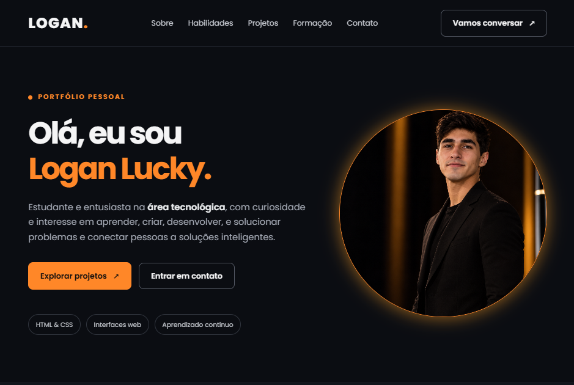
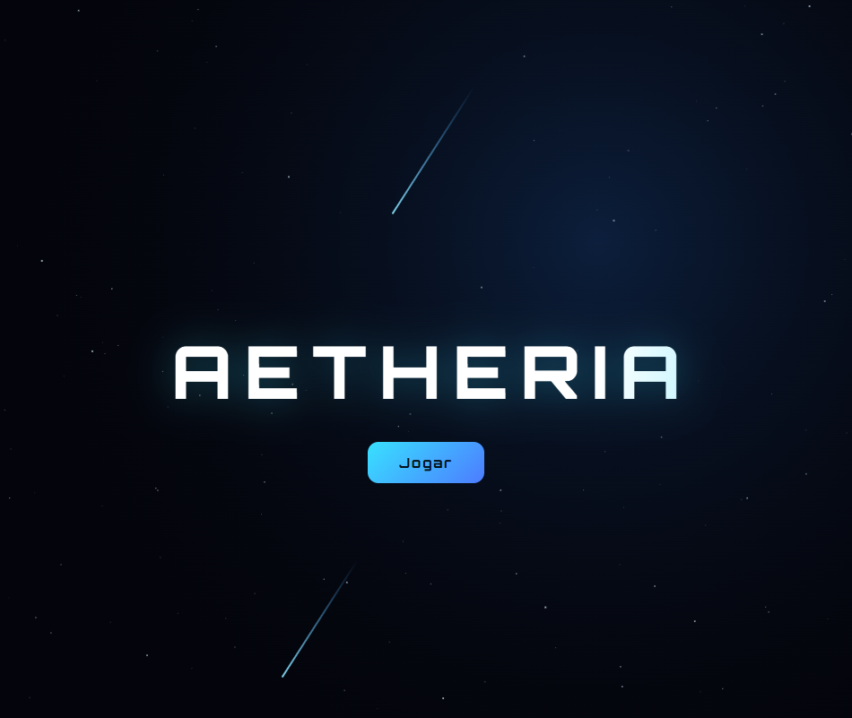
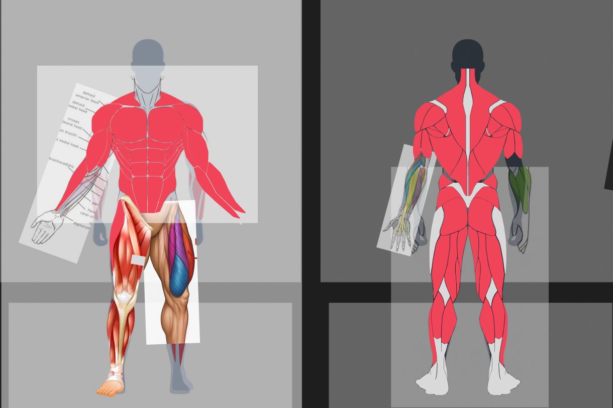
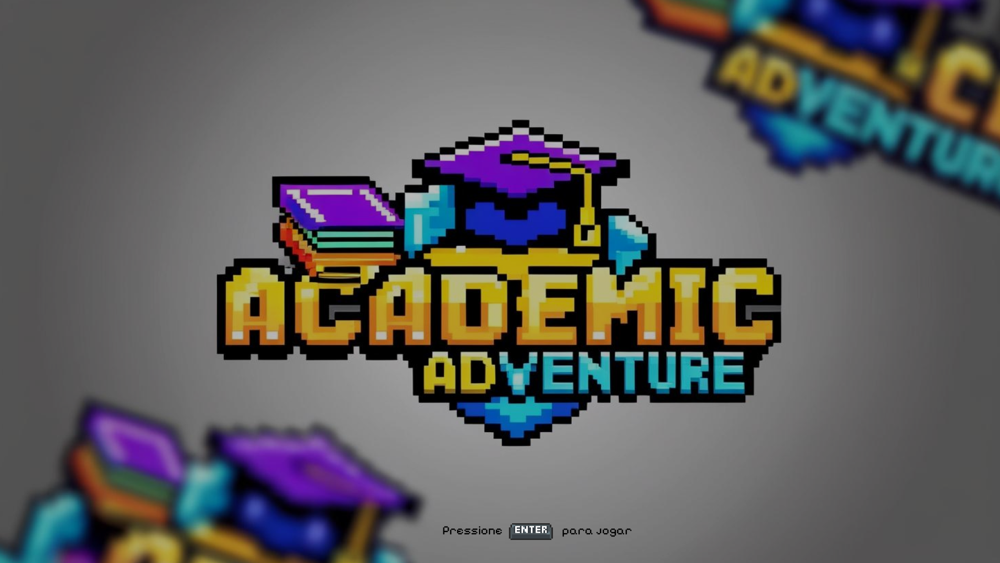
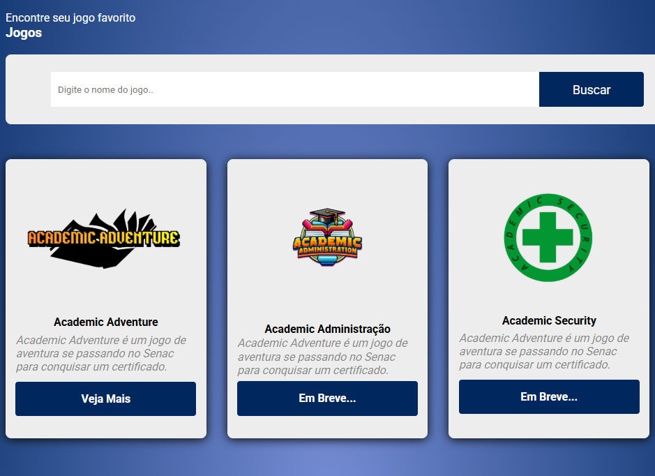
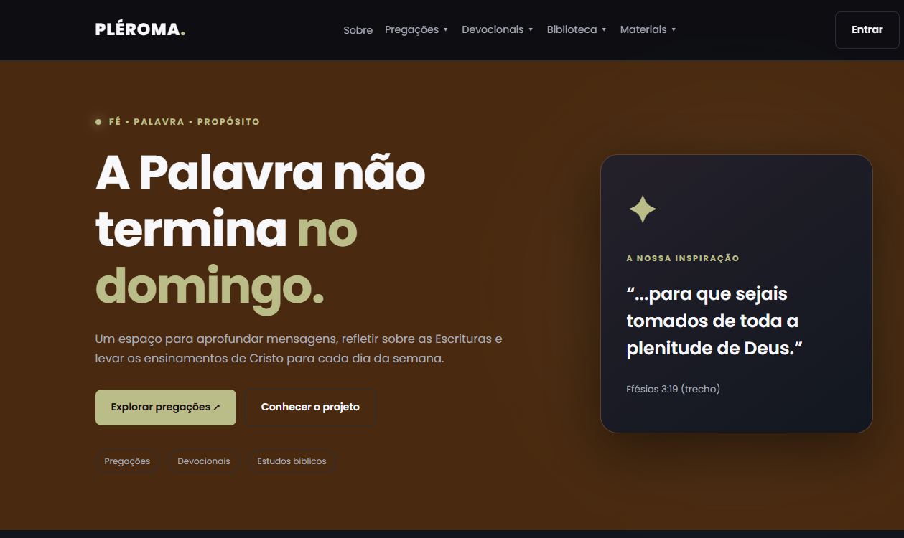

Programação
Estrutura semântica, formulários e acessibilidade.
PORTFÓLIO PESSOAL
Estudante e entusiasta na área tecnológica, com curiosidade e interesse em aprender, criar, desenvolver, e solucionar problemas e conectar pessoas a soluções inteligentes.
SOBRE MIM
Sou alguém que valoriza a autenticidade, a honestidade e a justiça, e acredito que somos definidos não apenas pelo que fazemos, mas pelos princípios e valores que carregamos e pelo impacto que deixamos nas pessoas.
Neste portfólio, reúno a minha evolução profissional, acadêmica e grandes projetos que refletem a minha paixão em tecnologia e em criar soluções que agregam valor.
E conhecimentos que vão desde fundamentos da bolha tecnológica até inteligência em negócios
Conheça minha trajetóriaO QUE ESTOU APRENDENDO
Estrutura semântica, formulários e acessibilidade.
Estilização, animações e identidade visual.
Composição de layouts em linhas e colunas.
Alinhamento e distribuição de componentes.
Conceitos de interatividade e lógica de programação.
Versionamento, repositórios e publicação de código.
DESTAQUES

SITE INDIVÍDUAL
Repositório GitHub do site de apresentação profissional e acadêmica.
Ver repositório

PLATAFORMA FITNESS
Plataforma Fitness inteligente que conecta musculação e tecnologia, te colocando em outro patamar.
Em desenvolvimento


PLATAFORMA CRISTÃ
Plataforma que une tecnologia e palavra de Deus para te levar a um outro patamar espiritual, mental e pessoal.
Em desenvolvimentoJORNADA
Graduação voltada para programação, desenvolvimento interfaces web, organização de projetos, redes, IA e inovação.
Senac minas | 2026 - Em andamento
Abrangência completa em hardware, redes locais, bancos de dados, algoritmos e desenvolvimento de aplicações para desktop e web..
Senac minas | 2023 - 2025
Foco na gestão de políticas de saúde e segurança, avaliação e controlo de riscos ocupacionais, investigação de acidentes, primeiros socorros, planos de emergência e ações educativas no ambiente laboral.
Senac minas | 2022 - 2023
Domínio de análise de dados, otimização de fluxos e estruturação de informações para suporte à decisão
Senac minas | 2025
Eu juntamente de minha turma TI, desenvolvemos um jogo em python, inspirado em Pokemon, mas que se passa no próprio SenacMinas.
Senac minas | 2024 - 2025
Aprofundamento contínuo em Python, automação de processos, controlo de versão com Git e estruturação de ambientes de desenvolvimento eficientes no VS Code.
Conhecimentos
Elaboração e estruturação de planilhas eletrônicas e relatórios gráficos básicos para otimização de fluxos analíticos.
Conhecimentos
Atendimento consultivo, planejamentos personalizados e soluções financeiras conforme as necessidades dos clientes.
Grupo Valor | 2026
Captação e desenvolvimento de novas parcerias estratégicas, contribuindo para o crescimento e expansão da empresa.
Grupo Valor | 2026
Prospecão, qualificação B2B, identificação de oportunidades, agendamento de reuniões para operações de crédito estruturado.
Grupo Valor | 2026
CONTATO
Investir em conhecimento é investir em você mesmo!